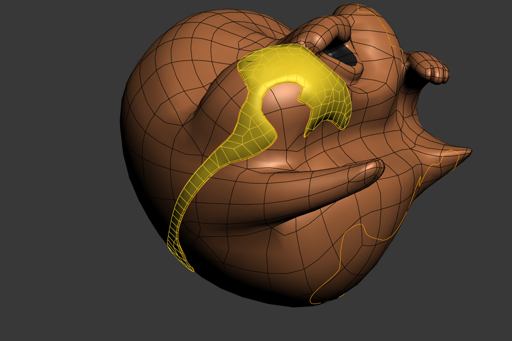
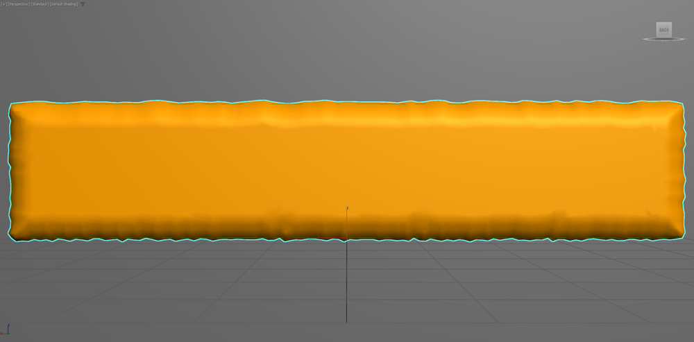

SplinePatch
Draw a patch on any surface from a curve, and keep it live.
What it does
SplinePatch makes a raised patch on one or more surfaces, like a sticker, a blob of paint or a plate of armour. You click an outline on the surface; the tool makes a curve with a SplinePatch9000 modifier on it. The patch is built from the curve and stays live: edit the curve, change a setting, or move or edit the surfaces underneath, and the patch follows.

How to use it
- Run SplinePatch (its button, or the SplinePatch item at the end of the Scripts part of the Q menu). Nothing needs to be set up.
- Click points on any object. The first click makes the curve and the patch and opens it in the modifier panel. Every object you click joins the surface list, so an outline can run across several objects. Hidden and frozen objects are skipped.
- Shift or Ctrl held while you click makes a corner point; otherwise the point is smooth. The label at the top of the viewport shows SMOOTH or CORNER.
- At 3 points the patch appears, and it updates with every further point. Right-click or Esc ends it.
- Adjust the settings in the modifier panel. To change a patch later, select it and run SplinePatch again: it asks whether to Edit it or make a New one on top.

Options
The modifier panel has a blue Add targets button with the list of surfaces (select rows and press Remove to take them off), a blue Place points button, Edit points and a status line. Place points works like the tool and needs no surface in the list first: a click on a new object adds it.
| Setting | What it does |
|---|---|
| Height | How high the patch rises above the surface. |
| Edge width | Width of the sloped edge. |
| Spacing | Face size. Smaller means more detail. |
| Edge detail | How many rows of faces the sloped edge has. |
| Roundness % | 0 is a straight slope, 100 a round edge. |
| Rim waves % | Makes the edge wavy, like slime. 0 is off. |
| Rim seed | Changes the random shape of the waves. |
| Quads | Four-sided faces in rows along the edge. Off gives triangles. |
| Cap underside | Adds a flat back on the surface, so the mesh is closed (watertight). |
| Flip direction | Pushes the patch into the surface instead of out of it. |
Height, Edge width and Spacing are always in sight; the rest is behind + More shape settings, which opens by itself when one of them is not at its default. Edit points takes you to the curve's points, drawn on top of the patch; click SplinePatch9000 in the stack to go back.
Good to know
- The patch is real quads (no n-gons), with a few triangles where rows end or at sharp corners.
- While you drag a point or a spinner it shows a quicker, coarser version, and the full patch comes back when you let go.
- When you close the modifier panel, its settings become the starting settings of your next patch.
- A new patch is one undo step. Pressing Esc or right-click before the first click makes nothing.
- You can put a patch on a patch. The modifier can also be added to any spline from the Modifier List; with fewer than 3 points it shows nothing and tells you how many are missing.
- Older patches (a mesh made by the tool, from when it was called Stamp) get a Make live button in the Edit / New question; one undo puts the old patch back.
- Where the curve comes back too close to itself for the patch to fill, the points on both sides turn pink and a message names them: move or delete one of them.
- A patch that wraps over a strongly curved part (a nose tip, a limb) is laid out on the surface itself, so it follows the shape.